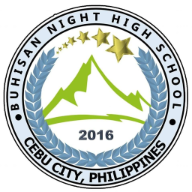

Buhisan Elementary and Night High School
Buhisan Elementary and Night High School (BHNS) is committed to providing quality education from Grade 1 to Grade 10. We strive to develop students academically, socially, and morally, ensuring a nurturing environment for lifelong learning.
Our History
Established in 2016, Buhisan Elementary and Night High School was founded with a vision to make quality education accessible to all members of our community. Located in Buhisan, Cebu City, Philippines, our institution emerged from the recognition that many students and working individuals needed flexible educational opportunities that could accommodate their diverse circumstances. What began as a modest initiative has grown into a thriving educational institution that serves hundreds of students annually, becoming a pillar of hope and transformation in our community.
Over the years, BHNS has evolved to meet the changing needs of our students and society. We have continuously improved our facilities, expanded our curriculum, and invested in teacher development to ensure that we deliver education that is relevant, engaging, and aligned with national standards. Our dual-department structure serving both elementary students during the day and junior high school students during evening hours reflects our commitment to inclusivity and our belief that everyone deserves access to quality education, regardless of their circumstances.
Our Mission
To provide accessible, quality, and values-based education that empowers students to reach their full potential and become responsible, productive, and compassionate members of society. We are dedicated to creating a learning environment where every student feels valued, supported, and challenged to excel in all aspects of their development.
Our Vision
To be a leading educational institution in Cebu City that transforms lives through excellence in teaching, innovation in learning, and unwavering commitment to character development. We envision a community where our graduates become agents of positive change, contributing meaningfully to their families, communities, and the nation.
Core Values
- Excellence: We pursue the highest standards in education, continuously striving to improve our teaching methods, learning resources, and student outcomes.
- Integrity: We uphold honesty, transparency, and ethical behavior in all our interactions, modeling the values we wish to instill in our students.
- Compassion: We foster a caring and inclusive community where every individual is treated with dignity, respect, and kindness.
- Innovation: We embrace progressive teaching approaches and technologies that enhance learning experiences and prepare students for the future.
- Community: We believe in the power of collaboration, building strong partnerships with families, local organizations, and the broader community.
Our Academic Programs
Elementary Education (Grades 1-6)
Our Elementary Department provides a comprehensive curriculum that builds strong foundational skills in literacy, numeracy, science, and social studies. We emphasize active learning through hands-on activities, collaborative projects, and real-world applications. Our experienced teachers create engaging lessons that cater to different learning styles, ensuring that every child can succeed. Beyond academics, we integrate character education, arts, music, and physical education to nurture well-rounded individuals who are prepared for the challenges of secondary education.
Class sizes are kept manageable to allow for personalized attention and meaningful teacher-student interactions. We utilize modern teaching aids and technology to make learning more interactive and effective. Regular assessments and parent-teacher conferences ensure that students' progress is monitored and supported throughout their elementary journey.
Junior High School - Night Classes (Grades 7-10)
Understanding that education should be accessible to everyone, our Night High School program offers evening classes for students who cannot attend traditional daytime schooling due to work, family responsibilities, or other commitments. This program covers Grades 7 through 10, providing rigorous instruction in all core subjects required by the Department of Education, including Mathematics, Sciences, English, Filipino, Araling Panlipunan, and Technology and Livelihood Education (TLE).
Our night school faculty members are specially trained to work with diverse learners, including working students, young parents, and individuals seeking to complete their education. Classes are scheduled in the evening to accommodate students' daytime responsibilities, and we provide a supportive learning environment that respects and values the unique experiences each student brings. The curriculum is designed to develop critical thinking, problem-solving skills, and practical competencies that will serve students well in their future careers or further education.
Our Facilities
BHNS is equipped with well-maintained classrooms, a library resource center, computer laboratories, and science laboratories that support hands-on learning experiences. Our campus provides a safe and conducive environment for learning, with adequate lighting, ventilation, and security measures. We continuously invest in improving our facilities to ensure that our students have access to the resources they need to succeed.
Our Teachers
The heart of BHNS is our dedicated team of professional educators who are passionate about teaching and committed to student success. Our teachers undergo regular professional development training to stay current with educational best practices and innovative teaching strategies. They bring not only academic expertise but also genuine care and concern for each student's well-being and growth. Many of our faculty members have been with the school since its founding, creating a stable and experienced teaching community.
Community Engagement
We believe that education extends beyond the classroom. BHNS actively engages with the local community through outreach programs, environmental initiatives, and partnerships with local organizations. Students are encouraged to participate in community service activities that develop their sense of social responsibility and civic duty. We also maintain open communication with parents and guardians, recognizing that education is most effective when families and schools work together.
"At Buhisan Elementary and Night High School, we don't just teach subjects we transform lives. Every student who walks through our doors is embarking on a journey of discovery, growth, and possibility. We are honored to be part of that journey and committed to providing the guidance, support, and inspiration needed for every student to succeed."
— The BHNS Community